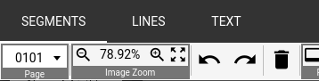

Introduction
Installation
The installation guide is adapted from the OCR4all setup guide*
Linux/MacOS
Installation
Download
You need to have Docker installed.
Furthermore, OCR4all expects a specific folder structure. Change into the directory where you want to manage your OCR4all projects.
Then create the following structure:
.
└── ocr4all
├── data
└── models
This structure can be created with the following command:
mkdir -p ocr4all/{models,data}
Go to the directory where you want to put your
Open your terminal and type:
docker pull uniwuezpd/ocr4all
If you want to install other docker images, you can find a list of available tags and the respective pull commands here.
The download of the docker image takes a while (6.5 GB).
Configuration
Make sure you are in the the ocr4all directory:
cd ocr4all
Build the docker container:
sudo docker run -p 1476:8080 -u `id -u root`:`id -g $USER` --name ocr4all \
-v $PWD/data:/var/ocr4all/data \
-v $PWD/models:/var/ocr4all/models/custom \
-it uniwuezpd/ocr4all
Now the OCR4all container is up and running.
If you type
docker ps -a
you will see the somethin like
CONTAINER ID IMAGE COMMAND CREATED STATUS PORTS NAMES
5fccf7d2280d uniwuezpd/ocr4all "catalina.sh run" 3 minutes ago Up 3 minutes 0.0.0.0:1476->8080/tcp, :::1476->8080/tcp ocr4all
Now go to http://localhost:1476/ocr4all/ in your web browser an you will see the OCR4all window.

Stop the container
It is not strictly necessary to stop the container when you are done with your work. If you want, you can stop it by typing
docker stop ocr4all
Update
If you want to update OCR4all to the latest release, remove the docker container and pull the docker image:
docker remove ocr4all
docker pull uniwuezpd/ocr4all
Then rebuild the docker container as explained above.
Standard Workflow
Description of the most basic workflow.
Specific settings will be discussed in subsections.

Getting the images
Try to get scans in a decent quality.
Scans downloaded from Google Books being binarized and low-resolution are not the best choice. If possible, try to get hold of high-quality scans provided by libraries.
A good starting point for your research are the following sites:
- Deutsche Digitale Bibliothek (DDB): Aggregates digitizations from German GLAM institutions
- Austrian National Library: Offers many scans in good quality not retrievable via DDB
Ideally, you download the images as a bunch of single image files (png,jpg,tif). Sometimes, however there is only a single pdf file available for download.
You can extract image files from the pdf using the pdfimages tool, which is part of poppler-utils and available for linux and MacOS.
pdfimages -png YOUR_PDF_FILE.pdf img
This command will extract the images, convert them into the png-format and store them as img-000.png img-001.png ....
If you must use a google books pdf you will get lots of 'noise' (the Google watermarks) which you will have to take care of in the next step.
Prepare your project
In order to start a new OCR4all project (usually a book), go to the ocr4all directory created during the installation of OCR4all.
.
└── ocr4all
├── data
└── models
Go to the data directory and create a project folder and an input folder where you will put your scans.
# cd into the data directory
cd data
mkdir new_project
mkdir new_project/input
Copy the image files into input directory, either through the graphical interface (copy+paste) or in your Terminal:
cp path/to/download/img-*.png /path/to/ocr4all/data/new_project/input
If you have a google pdf with watermarks, you can copy only the proper page images:
for i in $(seq -w 1 3 <number im images in your folder>);
do cp $i path/to/ocr4all/data/new_project/input;
done
Preprocessing
Segmentation
Line Segmentation
Recognition
Result Generation
Quick'n'dirty
To extract text on the fly, you can resort to the command line:
# Only Ground Truth
xmllint --xpath "//*[local-name()='TextEquiv'][@index='0']/*[local-name()='Unicode']/text()" project/processing/*.xml
# Only OCR
xmllint --xpath "//*[local-name()='TextEquiv'][@index='1']/*[local-name()='Unicode']/text()" project/processing/*.xml
# Ground Truth where available, otherwise OCR
xmllint --xpath "//*[local-name()='TextEquiv'][@index='0']/*[local-name()='Unicode']/text() | //*[local-name()='TextEquiv'][@index='1' and not(../*[local-name()='TextEquiv'][@index='0'])]/*[local-name()='Unicode']/text()" project/processing/*.xml
LAREX
Ground Truth Production
Introduction
Ground Truth, the corrected transcription on which the OCR models are trained, is generated in the LAREX tool.
Page segmentation
If a page doesn't contain any content but has a page segmentation (maybe with garbage line segments), delete it:
Select the segment and click on 'Delete"

Line segmentation
When training/refining the OCR model, the OCR engine looks at the selected line polygons. They should contain all relevant text-related pixels of a line and as possibly little noise (parts of other lines, empty space with scan noise etc.).
It's, however, probably not worth spending too much time on refinig the line polygons.
What is important for a satisfactory OCR result is that each separated line is recognized as such.
Oftentimes, you will find double lines:
They have to be split, otherwise the lines will not be OCRed correctly and will be missing in the end result.
Lines can be split ...
- either by adjusting one polygon to one line and adding a second one, or
- by using the
Subtractfunction: . Cut the line into two.
. Cut the line into two.
An any case you will have to add one or two lines to the reading order.
Initials are tricky. Ideally, you consider them as separate lines.
High text lines are sometimes split up by the algorithm. They have to be combined. Remember to check the reading order.
Transcription guidelines
- Be as accurate as possible. Information can be taken away by (automatic) normalization, but it cannot be added if needed later on. Distinguish between 'ae' and 'æ', 's' and 'ſ', '&' and 'et' and so on.
- Use unicode characters in a consistant way.
Important Unicode characters:
| char | Unicode | Windows |
|---|---|---|
| æ | u00e6 | Alt+0230 |
| Æ | u00c6 | Alt+0198 |
| q́ | q + u0301 | Alt+0301 |
Save results
Currently, writing to file is triggered only by clicking on Save result in the LAREX side pane (or Ctrl + S):

So, when you've done with a page, do remember saving your work.
Training
Manage your metadata
If you work on more than a handful of projects it is easy to loose track of where you got your files from.
It is therefore a good idea to store some metadata about your scans in the project folder.
If you download images from a library website, you will probably find a MARCxml or a METS file. Download it and put it into your project folder, so that you can look up all information you might need later on.
If there is no such file, save an persistent ID (DOI, URN or permalink) to the resource you are using in a file (e.g. metadata.txt) in your project folder.
PageXML
Purpose and structure
The PageXML is the one file that stores all information generated during the OCR pipeline.
It contains
- metadata on the image file (filename and dimensions)
- information on text regions
- text lines
- OCR text
- Ground Truth (where available)
It is an XML file that can become very verbose but has the following basic structure:
<?xml version="1.0"?>
<PcGts xmlns="http://schema.primaresearch.org/PAGE/gts/pagecontent/2019-07-15" xmlns:xsi="http://www.w3.org/2001/XMLSchema-instance" xsi:schemaLocation="http://schema.primaresearch.org/PAGE/gts/pagecontent/2019-07-15 http://schema.primaresearch.org/PAGE/gts/pagecontent/2019-07-15/pagecontent.xsd">
<Metadata>
<Creator>CREATOR</Creator>
<Created>DATE</Created>
<LastChange>TIMESTAMP</LastChange>
</Metadata>
<Page imageFilename="FILENAME" imageHeight="HEIGHT" imageWidth="WIDTH">
<TextRegion id="REGION_ID" type="paragraph" orientation="ORIENTATION">
<Coords points="POLYGON"/>
<TextLine id="LINE_ID">
<Coords points="POLYGON"/>
<Word id="WORD_ID">
<Coords points="POLYGON"/>
<Glyph id="GLYPH_ID">
<Coords points="POLYGON"/>
<TextEquiv index="1" conf="RECOGNITION CONFIDENCE">
<Unicode>OCR GLYPH</Unicode>
</TextEquiv>
more glyphs ...
<TextEquiv index="1" conf="RECOGNITION CONFIDENCE">
<Unicode>OCR WORD</Unicode>
</TextEquiv>
</Word>
more words
<TextEquiv index="1" conf="RECOGNITION CONFIDENCE">
<Unicode>OCR LINE</Unicode>
</TextEquiv>
<TextEquiv index="0">
<Unicode>GROUND TRUTH (if available)</Unicode>
</TextEquiv>
</TextLine>
more lines ...
</TextRegion>
</Page>
</PcGts>
This essentially breaks down to metadata (<Metatdata/>) and OCR information on line (<TextLine/>), word (<Word/>) and glyph level (<Glyph/>).
For glyphs and lines, a confidence value is provided.
It tells you how certain the OCR engine is about the result.
Regions, lines, words, and glyphs also have a <Coords/> node which contains the polygon vertices of the corresponding image area.
The Ground Truth you input (cf. Ground Truth Production)is stored on line level in an <TextEquiv> element with @index="0".
Technical Information
Cf. https://ocr-d.de/en/gt-guidelines/trans/trPage.html
Validation
You can check the validity of the PageXML using xsltproc and the PageXML schema file (cf. this gh issue).
wget "https://www.primaresearch.org/schema/PAGE/gts/pagecontent/2019-07-15/pagecontent.xsd"
xmllint --schema pagecontent.xsd --noout BOOK/processing/*.xml
If you have some PageXML files that were produced with an older version of OCR4all, you might encounter the problem that your PageXML is overwritten.
The reason for this is that in previous versions of OCR4all PageXMLs coordinates could be negative as well.
This is not compatible with the PageXML specifications and triggers this behaviour. To avoid data loss, update your OCR4all to this, you have to do a particular XSLT (cf. this GH issue):
wget "https://raw.githubusercontent.com/bertsky/workflow-configuration/master/page-fix-coords.xsl"
mkdir tmp_output
for i in BOOK/processing/*.xml; \
do xsltproc -o tmp_output/$(basename $i) page-fix-coords.xsl $i; \
done
Calamari
OCR4all can be considered a user-friendly GUI for the OCR-engine calamari.
This means that file generated in the OCR4all workflow can be modified with the more powerful calamari CLI.
In this section, I try to bring together some hints as to how to use calamari in addition to OCR4all.
For more information on Calamari, see the Calamari Website and the Docs.
Calamari Installation
The installation of calamari can be a pain. At the time of writing (13.2.22), installation via pip doesn't seem to work properly.
It is better to install it from source.
For a clean and fresh calamari installation, let's clone the git repository:
git clone https://github.com/calamari-OCR/calamari
Then create a virtual environment (to keep things simple, I put the virtual environment folder into the calamari folder):
cd calamari
mkdir venv
python3.7 -m venv venv
source venv/bin/activate
The virual environment is active, so now you can run the setup.py:
python setup.py install
When you run calamari-predict for the first time, you will see a number of error messages according to which you are lacking required packages.
You will have to run a number of pip install <package name> to install what is required.
I have created a requirements.txt for the virtual environment of my current Calamari (v2.2.0) installation (pip freeze --local > requirements.txt).
So you could download the requirements.txt and try to run
pip install -r requirements.txt
Basic Usage
Training of Mixed Models
maxnth has kindly provided the command for the training of mixed models based on OCR4all GT in this Github Issue:
calamari-cross-fold-train \
--files /path/to/first/ocr4all/project/processing/*.bin.png /path/to/second/ocr4all/project/processing/*.bin.png \
--dataset PAGEXML \
--n_folds 5 \
--num_threads 56 \
--best_models_dir /some/dir/models \
--display 100 \
--batch_size 5 \
--temporary_dir /some/dir/tmp \
--text_regularization spaces \
--n_augmentation 5
Batch Recognition
The basic command for text recognition with calamari-predict is the following:
calamari-predict \
--data PageXML \
--data.text_index 1 \
--data.pred_extension ".xml" \
--data.images my_ocr4all_project/processing/*.bin.png \
--data.xml_files my_ocr4all_project/processing/*.xml \
--checkpoint models/0/1.ckpt.json
With this command you can run the Recognition process on more than one project.
Mapping of calamari command and OCR4all settings
Some statistics
OCR4all doesn't provide any statistics on your projects.
Some simple command line operations can be helpful.
Page numbers
How many pages are there in my project?
ls project/input/*.png | wc -l
Number of lines
This command prints you a list of line numbers:
xmllint --xpath "count(//*[local-name()='TextEquiv'])" project/processing/*.xml
You can sum up the numbers in the list like this:
xmllint --xpath "count(//*[local-name()='TextEquiv'])" project/processing/*.xml | awk '{sum+=$1} END{print sum}'
Number of lines of Grount Truth
To find out how many lines of Ground Truth you have in one or multiple project(s), use
xmllint --xpath "count(//*[local-name()='TextEquiv'][@index='0']/*[local-name()='Unicode'])" project/processing/*.xml | awk '{sum+=$1} END{print sum}'
If you want to ouput the percentage of lines that have GT, the command start getting a bit unwieldy:
echo $(xmllint --xpath "count(//*[local-name()='TextEquiv'][@index='0']/*[local-name()='Unicode'])" project/processing/*.xml | awk '{sum+=$1} END{print sum}')/$(xmllint --xpath "count(//*[local-name()='TextEquiv'])" project/processing/*.xml | awk '{sum+=$1} END{print sum}') | bc -l
TEI conversion
Here I would like to describe a workflow for a TEI export of the PageXML files.

OCR-D
Collaborate via Github
The easiest way probably is to create a clean OCR4all docker container for the project you want to collaborate on via Github.
Two different scenarios are presented:
- You create your project and share it via Github
- You join an existing project and contribute to it
Scenario I: Create your own project
Prepare your system
Create your project folder and cd into it:
mkdir -p my_project/{data,models}
cd my_project
Reduce data volume
Projects can become quite heavy, especially if you're dealing with high-resolution images.
It's not strictly necessary to have them on the github repository.
You can significantly reduce the size of your repository by shrinking the image files in the input folder and by gitignoring the *.nrm.png files.
These files are important mainly for UX, but not for the core functionalities of the OCR4all pipeline.
# Create a separate folder where you keep the original input images
mkdir originput
cp input/* originput
# Shrink and binarize the original images
for i in originput/*.png; do convert $i -resize 20 -monochrome ${i/orig/}; done
Then, create a .gitignore file and add the following line:
originput
processing/*.nrm.png
# if you want to exclude the OCR models as well:
models
Now you've got a new input directory with bw thumbnails instead of high-resolution images and you won't be tracking (and uploading) the *.nrm.png.
You're github repo will thus contain thumbnails in input and *.xml + *.bin.png in processing.
The work will be done (and changes will happen) only in the *.xml files.
Create a repository locally and on Github
Go to Github and create a repository (e.g. my_project).
Then create a local git in your project folder (my_project) by cd'ing into it and then typing
git init
git commit -m "first commit"
git branch -M main
git remote add origin git@github.com:<YOUR-GITHUB-ACCOUNT-NAME/my_project.git
git push -u origin main
Scenario II: The projects exists already
Clone an existing repository
If you want to contribute to an existing repository, clone it:
git clone git@github.com:<SOME-GITHUB-ACCOOUNT>/someones_project.git
Create a new docker container
In both scenarios you now will have to create a new docker container with the right mappings.
If you don't want to remove your default docker container, you have to give it a different name, here ocr4all_my_project. You might also want to assign a port other than 1476 in order to avoid conflicts if you run both containers contemporarily. Here, we use 1477.
cd into the folder you have created (my_project in scenario I or someones_project in scenario II).
sudo docker run -p 1477:8080 -u `id -u root`:`id -g $USER` --name ocr4all_my_project \ # In scnario II: someones_project
-v $PWD/data:/var/ocr4all/data \
-v $PWD/models:/var/ocr4all/models/custom \
-it uniwuezpd/ocr4all
Now, your new docker container is available at http://localhost:1477/ocr4all/.
Do your work
Open your browser at http://localhost:1477/ocr4all/ and do your work (check line segmentation, add Ground Truth etc.).
It is a good idea to check if your local repository is up-to-date with the remote one.
So, before getting to work, do
git pull origin main
Stage, commit and push
When you've done some work, push it to the repository:
git add .
git commit -m "checked OCR for Chap. 1 of XYZ"
git push
In case you embark on a more adventurous set of modifications, consider creating a new branch.
git checkout -b <branch_name>
For mere Ground Truth generation, this should not be necessary, however.